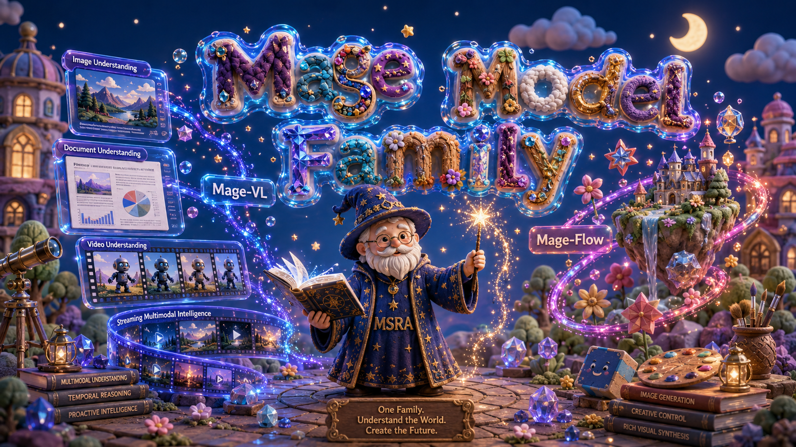

Mage: A Lightweight, Research-Friendly Multimodal Model Family
<b>Microsoft Mage Team</b>
Project Page GitHub Hugging Face Mage-Flow License: MIT Mage-VL License: Apache 2.0 Mage-ViT License: MIT arXiv arXiv Mage-VL Tech Report Mage-VL-Cowork Mage-VL-Cowork Project Page

---
Mage is a family of lightweight, research-friendly multimodal models built at a fixed 4B-parameter budget. It is designed to make advanced visual understanding and generation accessible for controlled experiments, post-training research, and vertical-domain applications under realistic compute budgets.
The family is organized around a shared codec-aligned efficiency philosophy — spend representation capacity where the signal is — applied to both the understanding and the generation side:
| Model | Task | Scale | Code | Report |
|---|---|---|---|---|
| Mage-VL | Image & video understanding, proactive streaming | 4B | mage_vl/ | arXiv |
| Mage-VL-Cowork | Hybrid computer use with GUI, code, and terminal actions | 4B | mage_vl_cowork/ | |
| Mage-Flow | Text-to-image generation & instruction-based editing | 4B | mage_flow/ | arXiv |
These models are compact enough to train, fine-tune, and deploy on modest hardware, yet remain competitive with much larger open systems in their respective domains.
---
🧩 Mage-VL — efficient codec-native proactive streaming understanding
Mage-VL is a codec-native, proactive-streaming multimodal foundation model for image & video understanding, whose visual encoder (Mage-ViT) is trained entirely from scratch and paired with a Qwen3-4B decoder at a compact 4B scale. Targeting a modern Moravec's paradox of VLMs — strong complex reaasoning, fail and slow at real-time perception — it cuts visual tokens by over 75% for up to 3.5× wall-clock inference speedup. A single released checkpoint simultaneously provides image & video understanding and the proactive streaming gate — one model, no separate variants.
Highlights
- Codec-native & from scratch. The whole visual stack is trained from scratch; the bio-inspired I/P predictive-patch mechanism (
16×16) cuts visual-token use by over 75% (~1/8 or less of dense frame sampling), enabling 8× longer video training and up to 3.5× inference speedup. - Matched-LLM video gains. With the 4B Qwen3 backbone fixed, swapping in Mage-ViT beats Qwen3-VL-4B on every reported video & temporal-grounding benchmark (e.g. +22.5 QVHighlight, +11.0 VSI-Bench).
- Strong for its size. On par with Qwen3-VL-4B on static images, and clearly ahead on video understanding and spatial intelligence (+11.0 VSI-Bench, +53.1 CrossPoint, +5.2 EmbSpatial).
- Proactive streaming, single model. A frozen-backbone cognition gate delivers low-latency, event-gated commentary and generalizes to real 2026 World Cup broadcasts.
- Seven empirical findings on data efficiency, resolution scaling, codec acceleration, VideoQA-SFT redundancy, motion–spatial synergy, AI4AI data pipelines, and Zero-Vision SFT for multimodal RL.
→ Details, installation, inference, and proactive streaming: mage_vl/README.md
🖥️ Mage-VL-Cowork — hybrid computer use from evolved harnesses
Mage-VL-Cowork is a 4B hybrid computer-use agent that combines visual GUI interaction with code and terminal execution in one policy. It starts from an intermediate Mage-VL checkpoint and uses a five-stage curriculum across midtraining, SFT, and RL.
Highlights
- 66.0% on OSWorld-Verified under a 50-step budget at 4B scale.
- Evolved teacher harnesses provide GUI, terminal, and hybrid demonstrations for different training stages.
- Mage-CUA-Forge synthesizes 293,806 tasks across 6,915 skills and retains 318,837 hybrid trajectories.
- Online hybrid RL adds 10.16 percentage points over Hybrid SFT while reducing model calls by 13.0% and output tokens by 25.4%.
→ Overview, training recipe, and results: mage_vl_cowork/README.md
🎨 Mage-Flow — efficient native-resolution generation & editing
Mage-Flow is a compact 4B generative stack for text-to-image generation and instruction-based image editing, built from two co-designed components: Mage-VAE (a lightweight, high-fidelity latent tokenizer) and a Native-Resolution Multimodal Diffusion Transformer trained with rectified flow matching. Each task ships in Base, RL-aligned, and 4-step Turbo variants.
Highlights
- Compact & competitive. A single 4B family for generation and editing that matches or beats much larger open systems (Qwen-Image 20B, Z-Image 6B, FLUX.2 32B, FireRed-Image-Edit 20B).
- Efficient tokenizer. Mage-VAE matches FLUX.2-VAE reconstruction fidelity using ~12× / ~22× fewer encode / decode MACs per pixel, removing the VAE high-resolution bottleneck.
- Native resolution. One checkpoint generates from 512 to 2048 on any aspect ratio, including extreme 4:1 (e.g.
512×2048,2048×512). - System-level speed. Native-resolution packing + fused CUDA kernels cut per-step training time from ~1.93 s → ~0.78 s (~2.5× faster training); at
1024²on a single A100, Mage-Flow-Turbo 0.59 s/image and Mage-Flow-Edit-Turbo 1.02 s/edit. - Versatile editing. Mage-Flow-Edit supports semantic content editing, appearance transformation, image restoration, and structure-aware outputs within a unified image-and-text-conditioned model.
→ Details, installation, Python API, CLI, and Gradio app: mage_flow/README.md
📣 News
- 2026-07-26 — Mage-VL released on 🤗 Hugging Face: a single codec-native checkpoint for image & video understanding with a built-in proactive streaming gate, alongside the standalone Mage-ViT visual encoder (ViT pre-training only).
- 2026-07-22 — Mage-Flow checkpoints released on 🤗 Hugging Face: Base, RL-aligned, and 4-step Turbo variants for both text-to-image generation and image editing.
📥 Model Zoo
Mage-VL — vision–language (image & video understanding). A single checkpoint bundles the understanding backbone and the proactive streaming gate. We also release the standalone visual encoder, Mage-ViT (ViT pre-training only — no VLM joint training).
| Model | Task | Hugging Face |
|---|---|---|
Mage-VL | image & video understanding + proactive streaming gate | 🤗 microsoft/Mage-VL |
Mage-ViT | codec-native visual encoder (ViT pre-training only) | 🤗 microsoft/Mage-ViT |
Mage-VL-Cowork — hybrid computer use. A 4B policy that combines GUI interaction with code and terminal execution.
| Model | Task | Hugging Face |
|---|---|---|
Mage-VL-Cowork | hybrid computer use (GUI + code & terminal) | 🤗 microsoft/Mage-VL-Cowork |
Mage-Flow — generation & editing. Each checkpoint is a self-contained diffusers-style repo (transformer/ + shared vae/, text_encoder/, scheduler/).
| Model | Task | Variant | Steps | Hugging Face |
|---|---|---|---|---|
Mage-Flow-4B-Base | text→image | Base | 30 | 🤗 microsoft/Mage-Flow-Base |
Mage-Flow-4B | text→image | RL-aligned | 20 | 🤗 microsoft/Mage-Flow |
Mage-Flow-4B-Turbo | text→image | Few-step distilled | 4 | 🤗 microsoft/Mage-Flow-Turbo |
Mage-Flow-Edit-4B-Base | editing | Base | 30 | 🤗 microsoft/Mage-Flow-Edit-Base |
Mage-Flow-Edit-4B | editing | RL-aligned | 30 | 🤗 microsoft/Mage-Flow-Edit |
Mage-Flow-Edit-4B-Turbo | editing | Few-step distilled | 4 | 🤗 microsoft/Mage-Flow-Edit-Turbo |
🚀 Usage
Each model is self-contained in its own directory with a dedicated README:
- Mage-VL — image/video understanding demo, codec backends, CLI →
mage_vl/README.md - Mage-VL-Cowork — project overview, training recipe, and results →
mage_vl_cowork/README.md - Mage-Flow — installation, Python API, CLI, prompt enhancement, Gradio app →
mage_flow/README.md
📝 Citation
bibtex@article{zhang2026magecowork, title={Mage-VL-Cowork: A Full Training Recipe to Learn Hybrid Computer Use from Evolved Harnesses}, author={Zhang, Xiaoyi and Wang, Haoqing and Zhang, Xinjie and Ming, Xiang and Wang, Xing and Yang, Senqiao and Zhang, Kaichen and Jia, Zhaoyang and Tan, Andong and Wang, Xinjiang and others}, journal={arXiv preprint}, year={2026} } @article{yang2026mage, title={Mage-VL: An Efficient Codec-Native Streaming Multimodal Foundation Model}, author={Yang, Senqiao and Zhang, Kaichen and Jia, Zhaoyang and Guo, Jinghao and Shen, Yifei and Zhang, Xinjie and Zhang, Xiaoyi and Wang, Haoqing and Li, Xiao and Zhang, Peng and others}, journal={arXiv preprint arXiv:2607.24904}, year={2026} } @article{zhang2026mage, title={Mage-Flow: An Efficient Native-Resolution Foundation Model for Image Generation and Editing}, author={Zhang, Xinjie and Zhang, Peng and Zheng, Shicheng and Guo, Jinghao and Jia, Zhaoyang and Shen, Yifei and Guo, Xun and Luo, Yuxuan and Li, Jiahao and Xie, Wenxuan and others}, journal={arXiv preprint arXiv:2607.19064}, year={2026} }
Responsible AI
These models are released for research purposes only and are not intended for product or service deployment. Responsible AI considerations were incorporated throughout the development process, including data selection, model training, and evaluation. The training data includes a combination of public, licensed, and internal datasets that were processed to remove clearly identifiable personal information and reduce harmful content where possible. However, as the data is largely sourced from web-scale collections, it may contain biases or uneven representation. As a result, the models may generate outputs that are inaccurate, biased, or inappropriate under certain prompts. The models should be used in controlled research settings with appropriate human oversight, and downstream users are responsible for applying additional safeguards — such as content moderation, validation, and compliance checks — before broader use.
License
Licensing is per-model:
| Model | License |
|---|---|
| Mage-VL | Apache-2.0 |
| Mage-ViT | MIT |
| Mage-Flow | MIT |